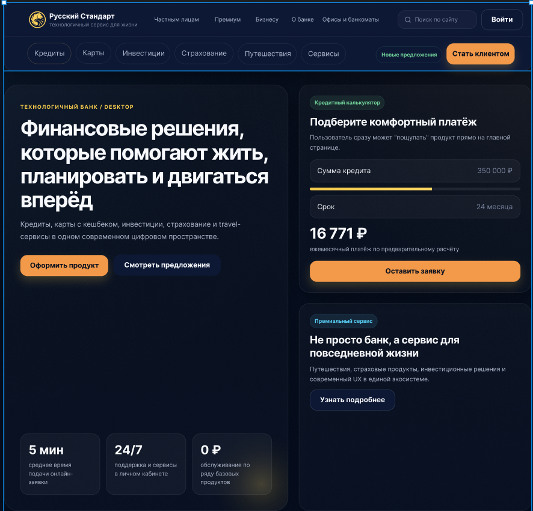

Частные клиенты
Ищут карту, кредит или вклад и хотят быстро понять условия. Для них важны простой язык, заметные целевые действия, удобный калькулятор и короткий путь до заявки.
Проект демонстрирует современный подход к проектированию банковских интерфейсов с акцентом на удобство пользовательских сценариев, доверие и визуальную простоту. Основной задачей стало создание понятной структуры, сокращение пути пользователя к банковским продуктам и формирование единой цифровой экосистемы.

В рамках проекта я провёл анализ банковских интерфейсов и пользовательских сценариев, разработал структуру главной страницы, спроектировал навигацию и ключевые продуктовые блоки, создал интерфейс в Figma и подготовил дизайн ключевых экранов для Desktop.
Особое внимание было уделено визуальной иерархии, понятной подаче банковских продуктов и сокращению пути пользователя к нужному действию. В результате получилась цельная концепция современного цифрового банка с удобным интерфейсом на разных устройствах.
«Русский Стандарт» — концепт редизайна банковского сайта с акцентом на понятную навигацию, удобный выбор финансовых продуктов и современную визуальную подачу. В проекте показано, как можно упростить взаимодействие пользователя с кредитами, картами, вкладами и другими услугами банка.
Основная идея проекта — сохранить узнаваемость бренда, но сделать цифровой интерфейс более ясным, последовательным и удобным. Я разработал UX-структуру, визуальную концепцию и дизайн ключевых экранов для Desktop.
Банковский сайт должен помогать пользователю быстро разобраться в продуктах, сравнить условия и перейти к целевому действию без лишних шагов и перегруженной навигации.
Бизнес-цели: повысить понятность продуктового предложения, сократить путь до заявки и сформировать образ современного, надёжного и технологичного банка.
Пользовательские задачи: быстро найти подходящий продукт, понять основные условия, рассчитать платёж и оставить заявку с минимальным количеством действий.
Ограничения: сохранить фирменный стиль бренда, обеспечить последовательный пользовательский опыт и не перегружать интерфейс лишними элементами.
Структура сайта учитывает разные сценарии поведения пользователей: от быстрого выбора повседневного банковского продукта до поиска премиального обслуживания или решений для бизнеса.
Ищут карту, кредит или вклад и хотят быстро понять условия. Для них важны простой язык, заметные целевые действия, удобный калькулятор и короткий путь до заявки.
Ожидают персональный подход, высокий уровень сервиса и более сдержанную визуальную подачу. Для них особенно важны качество интерфейса, статусность и внимание к деталям.
Ищут расчётно-кассовое обслуживание и другие решения для бизнеса. Им нужны понятные тарифы, чёткая структура разделов и быстрый доступ к консультации специалиста.
В основе визуального решения — глубокий тёмный фон, светлая типографика и оранжевые акценты для ключевых действий. Такой контраст помогает выстроить понятную иерархию, сохранить ощущение надёжности и выделить основные пользовательские сценарии.
На первом экране сразу показаны главное предложение, преимущества и два понятных сценария действия. Пользователь быстро понимает ценность продукта и может перейти к выбору услуги или оформлению заявки.
Кредитный калькулятор расположен в заметной зоне рядом с основным содержанием. Пользователь может оценить параметры продукта и перейти к заявке, не покидая страницу и не выполняя лишних действий.
Интерфейс построен на повторяемых компонентах и единой сетке. Это помогает сохранять визуальную целостность, быстрее масштабировать страницы и поддерживать единый стиль проекта.
Главная страница объединяет ключевые банковские продукты, основное ценностное предложение и кредитный калькулятор. Структура помогает пользователю быстро перейти к нужному разделу, оценить условия и выбрать дальнейшее действие.

Для быстрого доступа к кредитным продуктам было разработано отдельное раскрытое меню. Оно позволяет пользователю сразу перейти к нужному сценарию без лишних переходов и одновременно демонстрирует структуру банковских сервисов.


Интерфейс адаптирован для Desktop, Tablet в горизонтальной и вертикальной ориентации, а также для Mobile. Для каждого разрешения переработаны композиция, навигация и размеры элементов управления, чтобы сохранить удобство использования и читаемость контента на любом устройстве.


Проработал пользовательские сценарии, структуру страниц и логику переходов между банковскими продуктами и целевыми действиями.
Разработал визуальную концепцию, типографику, цветовую систему, состояния элементов и дизайн ключевых экранов.
Подготовил повторяемые интерфейсные элементы и единую систему компонентов для последовательного оформления ключевых экранов.
Собрал кликабельный прототип основных пользовательских сценариев для проверки навигации и последовательности экранов.
Организовал компоненты, стили и повторяемые элементы в единой системе, чтобы упростить развитие и масштабирование проекта.
Полностью адаптирован интерфейс для Desktop, Tablet и Mobile.
В рамках проекта была создана целостная концепция банковского интерфейса: от анализа пользовательских сценариев и структуры до визуального дизайна, прототипа и системы компонентов.
Проанализированы основные пользовательские сценарии, структура банковских продуктов и логика навигации между разделами.
Изучены интерфейсы банковских сервисов, способы подачи продуктов и распространённые UX-решения в финансовой сфере.
Собрана логика ключевых экранов и переходов, а основные сценарии объединены в кликабельный прототип.
Разработана визуальная система с акцентом на читаемость, доверие, последовательную иерархию и заметные целевые действия.
Ключевые элементы интерфейса объединены в единую систему для сохранения визуальной последовательности и дальнейшего развития проекта.
Создан набор компонентов, типографических стилей и повторяемых элементов для дальнейшего развития и масштабирования проекта.
Лучший способ оценить дизайн — увидеть его в действии.
Откройте опубликованную версию проекта и познакомьтесь с интерфейсом, навигацией, адаптивностью и взаимодействием элементов так, как это увидит реальный пользователь.
🚀 Посмотреть сайт в работе